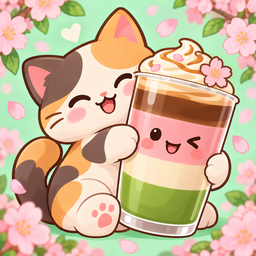
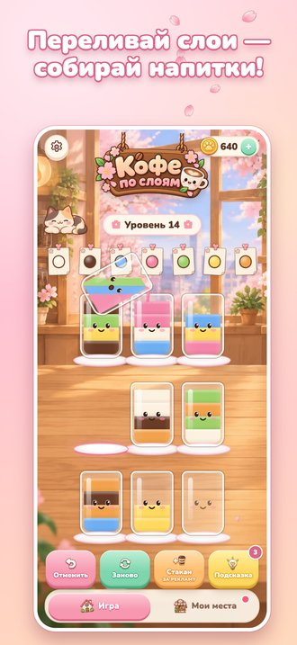

Кофе по слоямCoffee Layers · уютная головоломка с котиком для iPhone
Об игре
Переливай разноцветные слои напитков, выполняй заказы и обустраивай свою каваи-кофейню вместе с кошечкой-баристой. Сотни уровней, слои-сюрпризы и улица Сакуры с новыми местами.
Pour colorful drink layers, fill the orders and decorate your own kawaii café with a kitty barista.
Поддержка · Support
Нашли ошибку или есть идея? Напишите нам — ответим.
Found a bug or have an idea? Write to us.
Прогресс хранится на устройстве: если удалить игру, он сбросится. Progress is stored on your device and is removed if you delete the game.
Документы · Legal
